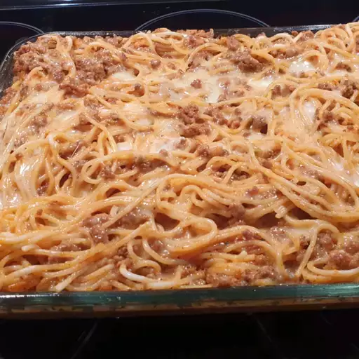

Spaghetti Casserole

Description
Basic spaghetti recipe with ground beef.
Ingredients
- cooking spray
- 1 (16 ounce) package spaghetti
- 2 pounds ground beef
- ¼ cup chopped onion
- 2 (26.5 ounce) cans meatless spaghetti sauce
- 1 (16 ounce) container fat-free sour cream
- 2 cups shredded mozzarella cheese, divided
- ½ cup Parmesan cheese
- salt and black pepper to taste
Instructions
-
Preheat the oven to 350 degrees F (175 degrees C).
Grease a deep 9x13-inch baking dish with cooking spray.
- Bring a large pot of salted water to a boil over high heat. Stir in spaghetti.
Boil pasta until cooked through but still firm to the bite, 8 to 10 minutes. Drain well.
-
Brown ground beef and onion in a large skillet over high heat; drain fat.
Stir in spaghetti sauce, sour cream, and 1 cup mozzarella. Mix in the cooked pasta.
-
Transfer pasta mixture to prepared baking dish. Top with remaining 1 cup mozzarella
and Parmesan cheese. Cover pan with aluminum foil.
-
Bake in preheated oven until hot and bubbly, about 30 minutes.